유통관리사-2급 (2014-07-27 기출문제)
1과목: 유통물류일반
1. 다음 자료를 이용한 (주)대한의 경제적주문량(EOQ)은 얼마인가?
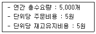
- 50
- 100
- 500
- 1,000
- 70
(정답률: 57%)

2. 기업이 구매를 할 때 가져야 할 목표와 거리가 먼 것은?
- 내부고객의 생산요청 사항을 지원해야 한다.
- 신뢰할만한 고품질 공급기반을 개발, 관리해야 한다.
- 적절한 구매 담당자 선정 및 전문교육훈련을 제공하도록 한다.
- 마케팅, 생산, 엔지니어링, 기술, 재무부서 등 타기능부서간의 관계를 강화한다.
- 조직의 목표달성을 전체최적화가 아닌 부분최적화를 중심으로 지원한다.
(정답률: 81%)
3. 유통경로 전략 결정에 대한 설명으로 가장 옳지 않은 것은?
- 유통범위의 결정과 관련한 전략으로는 개방적, 전속적, 선택적 유통경로가 있다.
- 유통경로의 길이는 제품특성, 수요특성, 공급특성, 유통비용구조 등의 영향을 받는다.
- 개방적 유통경로의 경우 제품의 노출 극대화가 일어나는 편의품에 적용된다.
- 전속적 유통경로의 경우 제품을 촉진시키고자 하는 경로구성원들의 동기를 감소시키기도 한다.
- 선택적 유통경로의 경우 선적비용과 같은 유통비용이 증가하기에 귀금속이나 고가품에 적용된다.
(정답률: 55%)
4. 다음에서 설명하는 소매업태는?
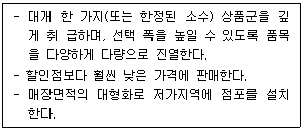
- 아울렛점(Outlet)
- 카테고리킬러(Category killer)
- 회원제 도매클럽(Membership Wholesale Club)
- 수퍼센터(Supercenter)
- 하이퍼마켓(Hypermarket)
(정답률: 52%)
5. 유통경로에서 구성원 간에 발생하는 힘(power)의 유형과 거리가 먼 것은?
- 보상적 힘
- 정보적 힘
- 강압적 힘
- 전문적 힘
- 반사적 힘
(정답률: 70%)
6. 소매상의 주요 기능 중 그 성격이 다른 하나는?
- 시장확대기능으로 새로운 고객을 창출한다.
- 재고유지기능으로 고객의 욕구를 충족시키기 위해 일정량의 재고를 유지한다.
- 금융기능으로 소비자에게 신용제공이나 할부판매를 통해 구매비용 부담을 덜어준다.
- 정보제공기능으로 사전 동의한 고객의 정보를 제조업자에게 제공할 수 있다.
- 주문처리기능으로 점포 내 POS시스템을 활용하여 주문처리가 가능하도록 한다.
(정답률: 45%)
7. 수요예측에 사용하는 지수평활법(Exponential Smoothing)에 대한 설명으로 가장 적합하지 않은 것은?
- 지수평활법은 지수평활상수에 의한 가중평균방법으로 수요예측을 한다.
- 예측오차에 대해 예측치가 조정되는 순발력은 지수평활상수 α에 의해 결정된다.
- 다음 예측치 = 전기의 예측치 + α(전기의 실제치- 전기의 예측치)
- 예측오차가 허용할 수 없을 정도로 큰 경우, 일부 컴퓨터 패키지 프로그램은 지수평활상수를 자동으로 조정하는 기능을 갖고 있다.
- 지수평활법은 계산이 복잡하고 가중치 체계인 지수평활상수의 변경이 어렵다.
(정답률: 56%)
8. 재고회전율에 대한 설명으로 가장 옳지 않은 것은?
- 재고회전율은 재고의 평균회전속도이다.
- 재고회전율이 높으면 품절 현상을 초래할 위험이 있다.
- 재고량과 재고회전율은 서로 정비례한다.
- 재고회전율이 낮으면 보관비용의 증대를 가져올 수 있다.
- 재고회전율과 수요량은 서로 양(+)의 상관관계가 성립한다.
(정답률: 60%)
9. 판매원의 감정노동을 관리하기 위한 내용으로 부적절한 것은?
- 대인접촉이 많은 판매원들이 감정노동을 경험할 가능성이 높다.
- 직원 선발시 적합한 인력을 채용하고, 가상훈련을 통해 대응력을 높여준다.
- 감정노동이 심해지면 무력감, 권태, 피로감 등의 부작용이 나타난다.
- 간단한 접객업무나 단순한 전화상담을 하는 판매원들은 감정노동이 없다.
- 고객에게 무관심하거나 의욕이 없어 보이는 판매원들은 특별히 상담을 하거나 직무재배치를 고려해야 한다.
(정답률: 78%)
10. “평가자가 평가항목에 대한 점수에 따라서 종업원을 평가하지만, 그 항목은 일반적인 서술이나 특성보다는 해당 직무와 관련성이 높은 행동과 사건을 구체적이고 분명하게 기술하고 있다.”의 내용에 가장 적합한 업적평가방법은?
- 개별서열법
- 집단서열법
- 도식척도법
- 행동기준평정척도법
- 중요사건법
(정답률: 61%)
11. 다음은 무엇을 설명한 것인가?
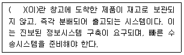
- 공급사슬관리
- 직배송
- ULS(Unit Load System)
- 크로스도킹(cross docking)
- TMS(Transportation Management System)
(정답률: 64%)
12. 소매조직을 설계할 경우, 중앙집권화의 이점으로 볼 수 없는 것은?
- 더 적은 관리자가 각종 의사결정을 하기 때문에 간접비용이 줄어든다.
- 회사는 공급자들로부터 더 낮은 가격으로 협상할 수 있다.
- 지역시장에 대한 이해가 높아지고, 지역인력시장 대응에 효율적이다.
- 표준화된 운영방침으로 효율성이 증가한다.
- 기업 전체를 위해 가장 우수한 인력이 의사결정을 할 수 있도록 기회를 제공한다.
(정답률: 50%)
13. 리더십을 과업지향적인 유형과 관계지향적인 유형으로 구분하여, 리더가 어떤 유형의 리더십을 갖고 있는지를 측정하기 위해 최소선호동료 설문지를 개발한 상황이론의 대표적인 학자는?
- 포터(M. Porter)
- 맥클리랜드(D. McClelland)
- 앨더퍼(C. Alderfer)
- 브룸(V. H. Vroom)
- 피들러(F. E. Fiedler)
(정답률: 55%)
14. 프랜차이즈에 대한 설명으로 가장 옳지 않은 것은?
- 프랜차이즈시스템은 프랜차이저(franchisor)라고 불리는 모회사와 프랜차이지(franchisee)인 개인이나 조직과의 계약관계이다.
- 프랜차이저가 프랜차이지에게 사업 전반에 걸쳐 운영상 필요한 지도나 지원과 함께 면허상의 특권을 부여한다.
- 프랜차이즈계약은 혼합계약이고 완전계약이며 평등 당사자 간의 계약이다.
- 프랜차이즈의 기본적 특성이자 장점이라고 하면 프랜차이저와 프랜차이지가 각각의 목표를 가진 독립적인 사업체들이면서도 마치 소비자들에게 동일사업체 같은 이미지를 준다.
- 프랜차이지는 대부분 위험부담 없이 사업을 시작하려는 사람들로, 당해 사업에 대한 경험과 지식이 없거나 부족한 사업자들이 많다.
(정답률: 60%)
15. 유통경로상의 이해관계가 상충(trade-off)되는 경우에 제조업체가 유통업체(중간상)를 효과적으로 관리하기 위한 조치로써 가장 옳지 않은 것은?
- 유통업체와의 장기적인 파트너쉽 구축
- 유통업체에 대한 적절한 보상
- 유통업체와의 효율적인 커뮤니케이션
- 판매실적기준의 최대화
- 판매실적의 공정한 평가
(정답률: 84%)
16. 중간상에 대한 상대적 경로성과를 평가하는 중간상 포트폴리오분석에 대한 바른 설명을 모두 나열한 것은?
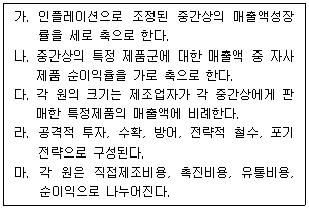
- 가, 나, 라
- 나, 다, 마
- 나, 다, 라
- 가, 다, 마
- 가, 나, 다, 라, 마
(정답률: 19%)
17. 유통경로를 설명하는 거래비용이론(transaction cost theory)에 대한 내용으로 가장 옳지 않은 것은?
- 거래비용이란 거래당사자들간의 협상, 거래에 필요한 정보의 수집 및 처리, 감시와 통제비용 등을 의미한다.
- 거래비용이론은 유통경로시스템 구성원들간의 합리적이고 정직한 행동경향을 가정한다.
- 거래비용이론은 유통경로구조의 수직적 통합 여부를 설명하는데 있어서 유용한 이론이다.
- 거래비용이론은 효율성과 비용이라는 경제적인 측면에서 기업의 통제 메커니즘을 설명한다.
- 거래비용이론은 시장교환에서의 가격 통제 메커니즘과 위계적 지배구조의 권위 통제 메커니즘을 설명한다.
(정답률: 30%)
18. 다양한 공급원으로부터 제공된 이질적인 제품들을 상대적으로 동질적인 것으로 구분하는 것에 대한 가장 적합한 용어는?
- 등급(Sorting Out)
- 수합(Accumulation)
- 분배(Allocation)
- 구색화(Assortment)
- 통합(Integration)
(정답률: 49%)
19. 인플레이션에 대응하는 중간상의 전략에 대한 설명으로 가장 옳지 않은 것은?
- 취급하는 상품의 종류를 재정비하여 재고비용을 줄인다.
- 생산성이 낮은 인력이나 시설을 정비하고, 정보화를 통해 이를 대체한다.
- 운반, 무료설치 등 부가적 서비스를 줄인다.
- 기존 상품들의 모델, 사이즈, 스타일을 줄인다.
- Private Brand의 비중을 줄이고 National Brand의 비중을 증가시킨다.
(정답률: 76%)
20. 인사고과의 오류 중 상관관계적 오류에 해당되는 것은?
- 현혹효과
- 관대화
- 범위제한
- 중심화경향
- 혹독화
(정답률: 41%)
21. 재무분석을 하기 위한 재무비율을 구성하는 요소로 거리가 먼 것은?
- 평균회전율
- 유동성비율
- 활동성비율
- 부채비율
- 수익성비율
(정답률: 43%)
22. 의사결정의 위양과 관련된 내용으로 가장 옳지 않은 것은?
- 위양의 가장 중요한 목적은 보다 효과적인 노동의 분업(division of labor)을 이루기 위한 것이다.
- 위양은 의사결정의 질과 의사결정에 대한 수용을 증진시키는 방법이며, 구성원들의 참여도를 높이기 위한 협의적 의사결정이나 공동의사결정에서와 같은 목적으로 이루어진다.
- 부하에 대한 신뢰감의 결여, 업무 전반에 대해 경영자가 절대적인 통제를 계속 유지하고자 하는 욕망 때문에 위양이 실패하는 경우가 많다
- 위양은 현장의 상황이나 특성이 의사결정에 잘 반영될 수 있게 한다.
- 위양이 효과적이기 위해서는 MBO(Management by Objectives) 프로그램을 병행하면 좋다.
(정답률: 29%)
23. 유통업체에서 성과 및 손익분석을 위해 많이 사용하는 아래의 재무적 분석 기법 중 고정비는 고려하지 않고 변동비만 고려하여 분석한다는 특성으로 인해 다른 네 가지 분석기법과는 성격이 다른 기법은?
- GMROS(Gross Margin Return On Selling area)
- DPP(Direct Product Profitability)
- ABC(Activity-Based Costing)
- GMROI(Gross Margin Return On Inventory investment)
- GMROL(Gross Margin Return On Labor)
(정답률: 53%)
24. 소매기관들이 처음에는 혁신적인 형태에서 저비용 저가격으로 출발하여 성장하다가 시간이 지나면서 고비용 고가격 업태로 변질되어 새로운 개념을 가진 신업태에게 그 자리를 양보하고 사라진다는 것에 대한 설명으로 가장 적합한 이론은?
- 변증법적이론(Dialectic Theory)
- 진공지대이론(Vacuum Zone Theory)
- 소매차륜이론(Wheel of Retailing)
- 소매수명주기이론
- 아코디온이론
(정답률: 68%)
25. 한국기업의 재무정보가 다음과 같을 때 자산회전율은 얼마인가?
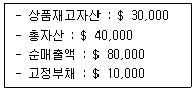
- 8
- 3
- 2
- 0.5
- 0.13
(정답률: 44%)
2과목: 상권분석
26. 상권의 계층적 분류에 대한 설명으로 옳지 않은 것은?
- 계층적 구조로 상권을 분류하면 지역상권, 지구상권, 개별상권 등으로 구분할 수 있다.
- 지역상권은 한 도시 내에 형성된 모든 유통기관들의 총체적 경쟁구조로 형성되어 있다.
- 지구상권이란 한 지구내에서 핵이 될 수 있는 하나의 점포가 직접적으로 형성하는 개별상권을 말한다.
- 한 점포가 형성하는 개별상권은 그 점포의 크기나 특성에 따라 상권의 크기가 변화할 수 있다.
- 큰 행정구역은 복수의 지역상권을 포함할 수 있고, 한 지역상권에는 다수의 지구상권이 포함될 수 있다.
(정답률: 59%)
27. 소매 입지별 유형에 대한 설명으로 옳지 않은 것은?
- 도심입지의 경우 충분한 잠재고객과 동일업종군의 분포, 접근성 등을 감안하여 입지를 선정하는 것이 좋다.
- 산업별 입지의 경우 상업입지, 공업입지, 농업입지 등으로 나누어 입지를 결정하게 된다.
- 노면 독립입지의 경우 경쟁업체가 많고 가시성도 낮을 뿐만 아니라 영업시간 등의 제한이 있어 고객 편의성을 높이기 어렵다.
- 복합용도건축물은 다수의 용도를 수용할 수 있고, 물리적, 기능적 규합과 통일성 있는 개발이 필요하다.
- 쇼핑센터는 도심 밖의 커뮤니티 시설로 계획되기도 하며, 우리나라에서는 번화한 상점가를 의미하기도 한다.
(정답률: 70%)
28. BPI(Buying Power Index), SAI(Sales Activity Index), RSI(Retail Saturation Index) 등 상권을 평가하는 방법들에 대한 설명으로 가장 옳은 것은?
- BPI는 다른 지역과 비교한 특정지역 내의 1인당 소매매출액을 측정하는 방법이다.
- SAI는 시장의 구매력을 측정하는 지표로 인구, 소매매출액, 유효소득의 세 가지 비율을 이용하여 계산한다.
- BPI를 계산하는 공식은 (지역의 특정 제품 소비자 수×지역의 특정 제품 소비자 1인의 평균 구매액)/(특정 지역 내에서 그 제품에 할당된 총 판매면적)이다.
- RSI를 계산하는 공식은 (총 소매 매출액 중 그 지역이 차지하는 비율)/(총인구 중 그 지역이 차지하는 비율)로 계산하며, 이 지수의 숫자가 높을수록 시장구매력은 크다.
- RSI는 특정 상권 내에서 주어진 제품계열에 대한 점포 면적당 잠재수요를 측정하는 방법이다.
(정답률: 42%)
29. 넬슨의 소매입지 선정원리 중'서로 업종이 다른 점포가 인접해 있으면서 보완관계를 통해 상호 매출을 상승시키는 효과를 발휘하는 것'을 의미하는 것은?
- 중간 저지성
- 성장 가능성
- 누적적 흡인력
- 양립성
- 경쟁 회피성
(정답률: 65%)
30. 소매업의 입지 선정 시 고려해야 할 요소에 대한 설명으로 옳지 않은 것은?
- 교통수단의 다양성, 편의성, 보행자 수 등을 조사하고 주차규모를 결정하기 위해 점포규모, 예상고객수 및 방문빈도 등을 파악해야 한다.
- 주변 점포와 관련하여 좋은 여건이란 주변 점포와 경쟁하지 않고, 고객을 서로 공유하여 총매출액을 증가시킬 수 있는 곳을 말한다.
- 비어있는 점포에 출점을 할 경우 그 이전 점포가 실패하였다 하더라도, 예정된 점포와는 관련성이 없기에 그 실패원인에 대해 상세하게 조사할 필요는 없다.
- 총자산에 대한 투자액에는 입지, 제품의 입고, 고정물, 조명, 주차시설 등에 대한 비용과 초기자금 등이 포함된다.
- 출점할 점포의 예상매출액을 계산하기 위해 상권 내 총판매면적 중 예정된 입지의 판매 공간 비율을 고려한다.
(정답률: 76%)
31. A사는 부지를 임차하여 A사가 신축하고 10년 사용 후 토지주에게 돌려주는 방식으로 슈퍼마켓을 출점할 계획이다. 이와 관련하여 가장 적합한 내용을 모두 고른다면?
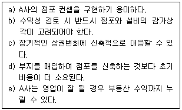
- a, b, c, d, e
- c, d, e
- a, b, c
- a, b, c, e
- b, c, e
(정답률: 55%)
32. 점포입지의 중요성에 대한 설명으로 옳지 않은 것은?
- 구색, 인테리어 등의 소매활동 수단은 경쟁사에 의해 곧 모방이 되지만 점포입지는 모방이 불가능한 경쟁수단이다.
- 점포입지의 선정이 이루어지기 전에는 통제가능한 마케팅의사결정변수이지만, 일단 선정된 후에는 통제가 어려운 환경요인의 성격을 갖는다.
- 점포입지는 그 효과가 장기간에 걸쳐서 발생하고, 이전하지 않는 한 지속된다.
- 점포입지는 업종과는 관계가 없으므로, 좋은 입지는 업종에 무관하게 점포의 성공가능성을 높인다.
- 점포입지는 소비자를 유인하기 위한 주요한 수단이다.
(정답률: 75%)
33. 상권분석을 위해 다음의 작업을 이용하여 유추법을 사용하였다. 작업의 순서로 알맞은 것은?
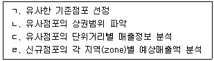
- ㄱ→ㄴ→ㄷ→ㄹ
- ㄱ→ㄷ→ㄴ→ㄹ
- ㄴ→ㄷ→ㄹ→ㄱ
- ㄴ→ㄹ→ㄱ→ㄷ
- ㄴ→ㄹ→ㄷ→ㄱ
(정답률: 70%)
34. 유통/서비스 산업의 지리적 입지와 관련된 주요 특징이라고 보기 어려운 것은?
- 수요자가 재화와 서비스를 제공 받는 공간으로 각종 상권 또는 서비스권이 형성된다.
- 유통서비스산업은 대부분 최종 소비자와 연결된 경제활동으로 개개의 소비가 분산되어 있기 때문에 거시적으로 보면 인구 또는 사업체의 분포와 대응관계가 있다.
- 수요자는 재화와 서비스를 공급받기 위해 이동하며, 이동범위는 한계가 있으나 이동비용에는 제약이 없다.
- 유통서비스업의 거점은 지리적 거리와 규모 등에 따라 계층성을 갖는다.
- 상위계층 중심지는 하위계층 중심지를 지배하는데, 이는 상위계층 중심지가 보다 많은 중심적 기능(재화, 서비스)을 갖고 있기 때문이다.
(정답률: 78%)
35. 입지의 유형을 분류한 것이다. 입지의 유형과 설명이 올바르게 짝지어지지 않은 것은?
- 적응형 입지 - 거리를 통행하는 유동인구에 의해 영업이 좌우되는 입지
- 목적형 입지 - 고객이 특정한 목적을 가지고 이용하는 입지
- 생활형 입지 - 아파트, 주택가의 주민들이 이용하는 입지
- 집재성 입지 - 배후지의 중심지에 위치하는 것이 유리한 입지
- 산재성 입지 - 동일 업종이 모여 있으면 불리한 입지
(정답률: 49%)
36. 상권과 입지의 개념 및 특성을 구분하여 설명한 내용으로 옳지 않은 것은?
- 상권은 점포를 이용할 가능성이 있는 고객들이 거주하는 범위로 볼 수 있다.
- 상권은 종종'특정 지역에 위치한 점포의 집단'을 의미하는 개념으로 사용되기도 한다.
- 입지는 사업을 영위하게 될 위치나 위치적 조건을 포함하는 의미이다.
- 상권은 마케팅의 공간적 범위 또는 유효수요의 분포 공간으로 인식될 수 있다.
- 상권의 평가항목에는 부지형태, 점포형태, 가시성, 주차시설 등이 해당된다.
(정답률: 50%)
37. 다음 제시되는 인구, 중심지까지의 소요시간, 매장면적 등의 자료를 이용하여 C지구의 구매력 규모인 2억원이 A시로 어느 정도 흡인되는지 올바르게 제시한 것은?
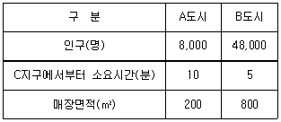
- 약 3천만원
- 약 4천만원
- 약 6천만원
- 약 1억 2천만원
- 약 1억 6천만원
(정답률: 48%)
38. 상가의 종류와 상가별 특성을 연결해 놓은 것으로 옳지 않은 것은?
- 근린상가 - 입점업종으로 생활편의 소매/서비스와 선매품 등의 입점이 이루어진다.
- 복합상가 - 동일 건축물 안에 판매시설과 공동주택, 근린생활시설, 업무시설 등이 건설된다.
- 쇼핑센터 - 외국에서는 초기에 도심지역을 중심으로 발전하였으며 집약된 상권을 기반으로 한다.
- 단지내 상가 - 아파트단지나 주택단지에 형성되며 상권의 한정성으로 인해 단지의 규모가 중요하다.
- 재래시장 - 유통환경의 급격한 변화에 대처하지 못하였고 시설의 노후화 등으로 경쟁력을 상실하고 있다.
(정답률: 45%)
39. 쇼핑센터와 같은 대형 상업시설의 테넌트(tenant) 관리와 관련된 설명으로 옳지 않은 것은?
- 테넌트(tenant)는 상업시설의 일정한 공간을 임대하는 계약을 체결하고 해당 상업시설에 입점하여 영업을 하는 임차인을 일컫는 말이다.
- 테넌트 믹스(tenant mix)는 상업시설의 머천다이징 정책을 실현하기 위해 시설내 테넌트 간에 끊임없이 경쟁을 유발하도록 해야 한다.
- 앵커 테넌트(anchor tenant)는 상업시설 전체의 성격을 결정짓는 요소로 작용하며 해당 상업시설로 많은 유동인구를 발생시키기도 한다.
- 앵커 테넌트(anchor tenant)는 핵점포(key tenant)라고도 하며 백화점, 할인점, 대형서점 등 해당 상업시설의 가치를 높여주는 역할을 한다.
- 마그넷 스토어(magnet store)는 쇼핑센터의 이미지를 높이고 쇼핑센터의 회유성을 높이는 점포를 말한다.
(정답률: 68%)
40. 점포의 선택을 위해 고려할 입지조건과 점포구조에 대한 설명으로 옳지 않은 것은?
- 입지조건 평가를 위해 점포의 가시성, 접근성 등을 검토해야 한다.
- 점포규모와 관련하여 임차면적과 전용면적을 확인해야 한다.
- 고객시선을 고려한 간판을 설치할 수 있는 위치와 길이, 높이를 확인해야 한다.
- 건물의 층과 위치, 계단, 엘리베이터의 유무와 위치도 접근성에 해당된다.
- 점포의 형태는 도로에서 볼 때 전면과 측면 비율이 2:3이 될 때 접근성 확보에 좋다.
(정답률: 50%)
41. Converse의 제 2 법칙에 의하면 소비자가 지출하는 금액은 거주자의 시장크기에 의해 변화할 수 있다고 제시하고 있다. 현재 준선이는 인구 6만명의 중소도시에 거주하고 있으며 8 mile 떨어진 인근에 인구 360만명의 대도시가 있다. 준선이가 거주하는 도시에서 선매품인 A제품에 한해 소비하는 금액이 3,000만원이면 준선이가 도시외부에서 쓰는 금액은 얼마인가?
- 1,900만원보다 크고 2,000만원보다 작다.
- 2,100만원보다 크고 2,500만원보다 작다.
- 2,500만원보다 크고 2,600만원보다 작다
- 2,700만원보다 크고 2,900만원보다 작다.
- 2,900만원 이상이다.
(정답률: 37%)
42. 점포의 효용(매력도) 측정 과정에서 Huff모형보다 MNL모형을 이용할 때 유리한 점을 가장 잘 표현한 것은?
- 비교적 자료를 구하기 쉬운 점포의 면적을 변수로 반영한다.
- 중력이론을 토대로'거리의 제곱에 반비례한다'는 사실을 반영한다.
- 점포와의 거리 및 점포의 면적 이외에도 다양한 변수를 반영할 수 있다.
- 소비자와 점포 사이의 거리를 반영한다.
- 점포까지의 이동시간을 반영할 수 있다.
(정답률: 65%)
43. 상권조사 기법으로 많이 활용하는 CST(Customer Spotting Technique)기법과 관련된 설명으로 볼 수 없는 것은?
- 상권의 범위를 파악하는데 도움을 준다.
- 상권내 소비자의 인구통계적 특성을 분석할 수 있다.
- 기존 유사점포 및 신규점포 분석에 활용된다.
- 점포들간의 상권 잠식상태와 경쟁의 정도를 측정할 수 있다.
- 회귀분석법을 적용할 때 대부분 활용된다.
(정답률: 41%)
44. 점포의 입지이론을 단일점포 입지이론과 다점포 입지이론으로 구분할 때 해당되는 설명으로 옳지 않은 것은?
- 단일점포의 최적입지를 조사하는 방법 중 가장 간단하면서 체계적인 방법은 체크리스트를 활용하는 방법이다.
- 체크리스트 방법에는 점포경쟁 구조분석이 포함되며 위계별, 업태별 및 업태내, 잠재경쟁구조, 경쟁 및 보완관계 등을 분석하게 된다.
- 단일점포 입지이론에는 자사점포와 유사한 점포를 선정하여 신규입지에서의 매출액과 상권규모를 추정하는 유추법이 있다.
- 다점포 입지모형은 한 도시 전체 점포수에서 차지하는 비율과 시장점유율과의 관계를 선형으로 볼 때 사용할 수 있는 개념이다.
- 다점포 입지모형은 기본적으로 MCI이론을 연장시킨 것으로 하나의 상권 내에서 복수의 점포를 어떻게 배치하는 것이 좋은지를 찾는 방법이다.
(정답률: 34%)
45. 다음은 허프(Huff)의 모형을 이용하여 점포 선택가능성을 제시한 것이다. 예시에 적합한 설명으로 옳은 것은?
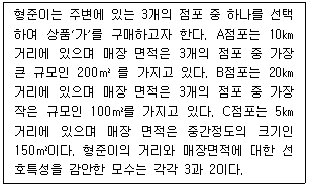
- 상품'가'의 판매 점포 중에서 다른 점포에 비해 절대적 우위에 있는 점포는 없다.
- A점포는 다른 점포에 비해 거리는 보통이지만 점포크기가 가장 크기 때문에 비교우위가 있다.
- 신규점포 D가 형준에게 선택되려면 매장면적과 접근성은 각각 300m2, 10㎞ 떨어진 곳에 입지하면 된다.
- C점포의 경우 가장 가까운 거리와 중간규모의 매장을 구비하였기 때문에 선택될 가능성이 가장 크다.
- 각 점포의 경우 전체 상권 내에서 동일한 비교 우위를 가지고 있다고 분석된다.
(정답률: 37%)
3과목: 유통마케팅
46. 조사를 위한 표본을 추출하는 방식 중 성격이 다른 하나는?
- 편의표본 추출법
- 단순무작위표본 추출법
- 층화무작위표본 추출법
- 군집표본 추출법
- 체계적 무작위 추출법
(정답률: 43%)
47. 브랜드 자산에 대한 내용으로 가장 옳지 않은 것은?
- 브랜드 자산은 브랜드 인지도와 브랜드 이미지로 구성되어 있다.
- 브랜드 이미지는 호의적이고, 독특하고, 강력해야 한다.
- 인지도가 높다는 것은 강력한 브랜드가 되기 위한 필요조건이지만 충분조건은 아니다.
- 브랜드 자산이 강력하면 더 높은 가격 프리미엄을 획득할 수 있다.
- 브랜드 자산이 강력한 경우 브랜드 보호를 위해 상표확장을 지양한다.
(정답률: 44%)
48. 점포 구성과 설계에 대한 내용으로 옳지 않은 것은?
- 점포는 고객에게 상품을 판매하는 곳으로 교환가치를 창출해야 한다.
- 점포는 고객들에게 구매 행동에 대한 올바른 정보를 전달해야 한다.
- 점포는 특수상품이나 전문품을 전방시설에 위치시켜 상품을 효과적으로 전시해야 한다.
- 점포는 상품을 잘 보이게 하면서 잠재고객이 편하게 쇼핑할 수 있도록 조성해야 한다.
- 점포는 무엇을 판매하고 누구를 위한 점포인지에 대한 명확한 특징이 있어야 한다.
(정답률: 56%)
49. 단품 및 단품관리에 대한 설명으로 가장 옳지 않은 것은?
- 단품이란 저마다 객체성을 갖고 있어서 더 이상의 세분화가 이루어질 수 없는 상품단위를 말한다.
- 단품관리란 상품을 품목, 단위별 수량관리를 통해 최소단위로 분류해서 그 단위품목을 관리하는 방식이다.
- 단품마다 판매수량이 파악되므로 판매에 대한 상품 정보를 정확히 알고 판매에 활용할 수 있다.
- 단품관리를 통해 팔리지 않는 상품을 배제하고 팔리는 상품을 효율적으로 진열할 수 있다.
- 단품관리를 통해 매장면적 대비 적정 판매 인원수 및 지역 내의 소비구조 등을 파악할 수 있다.
(정답률: 57%)
50. 상품정책의 기본유형에 대한 설명으로 가장 옳지 않은 것은?
- 완전 종합형 상품정책 : 백화점처럼 종합화와 전문화를 동시에 실현하는 것이다.
- 불완전 종합형 상품정책 : 양판점처럼 종합화를 우선적으로 실현하는 것이다.
- 완전 한정형 상품정책 : 전문점처럼 종합화보다는 전문화를 우선적으로 실현하는 것이다.
- 불완전 한정형 상품정책 : 근린점처럼 종합화, 전문화 모두를 단념하는 것이다.
- 완전 계획형 상품정책 : 점포규모, 입지조건 등의 조건에 따라 탄력적으로 상품을 구성하는 형태이다.
(정답률: 33%)
51. 다음 내용은 무엇을 설명한 것인가?
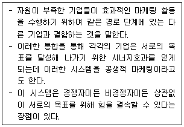
- 수직적 마케팅 시스템(vertical marketing system)
- 수평적 마케팅 시스템(horizontal marketing system)
- 몰입형 마케팅 시스템(commitment marketing system)
- 사회적 마케팅 시스템(social marketing system)
- 체인 시스템(chain system)
(정답률: 60%)
52. 효율성을 강조하는 유통목표에 해당하는 것은?
- 고객만족도
- 클레임건수
- 중간상의 거래전환건수
- 신시장 개척건수
- 악성 미수금비율
(정답률: 31%)
53. 유통환경의 내부분석에 해당하는 것은?
- 고객의 구매편의성 증대로 소매점포수 확대나 적정재고유지가 중요해졌다.
- 새롭게 등장하는 소매업태가 무엇인지, 적절히 분석하고 대응해야 한다.
- 자사의 성과를 분석할 경우에는 유동성비율, 재무적 건실도 등을 포함한다.
- 원재료 공급업자의 가격정책을 주시한다.
- 좁은 의미의 경쟁자는 직접 경쟁 업태이지만, 넓게 보면 할인점도 백화점의 경쟁상대가 될 수 있다.
(정답률: 55%)
54. 유통경로에서 중간상의 존립 근거로 가장 부적절한 것은?
- 거래 과정의 효율성을 개선시킨다.
- 분류과정을 통한 구색상의 차이를 조정한다.
- 거래를 정례화시켜 경로구조를 지속하게 한다.
- 거래상의 탐색과정을 수행한다.
- 정보시스템의 구축을 통해 경로구조를 분석하게 한다.
(정답률: 33%)
55. 진열방법에 대한 내용으로 옳지 않은 것은?
- 일부 의류업체는 매장의 전체적 이미지를 표현하기 위해서 아이디어 지향적 진열방식을 사용하기도 한다.
- 할인점, 식품점 등은 거의 모든 상품을 스타일이나 품목별로 진열하고 있다.
- 곤돌라 진열이란 벽과 높은 곤돌라를 사용하여 상품을 수평적으로 진열하는데, 이는 좌에서 우로 이동하는 고객 시선의 자연스러운 흐름을 따르는 효과적인 진열이다.
- 많은 양의 상품을 한꺼번에 쌓아 두는 방식을 적재진열이라고 한다.
- 소매업체가 고객의 눈길을 끌기 위해 상품을 노출시키고자 할 때 전면 진열을 한다.
(정답률: 39%)
56. 상품관리 및 구성에 대한 설명 중 가장 옳지 않은 것은?
- 구색계획(Assortment Planning)은 특정 상품 카테고리에 대한 재무 및 상품기획 상의 목표를 계획하는 것이다.
- 소매점이 판매하는 모든 상품의 종류와 조합을 상품구색 또는 상품구성이라 한다.
- 상품계열은 유사한 성능, 동일한 고객층, 동일한 가격대 등과 같이 서로 관련성이 있는 상품군을 말한다.
- 전문점의 상품계열 깊이(depth)는 한정되어 있으나 백화점과 할인점은 깊다.
- 상품 믹스(product mix)란 취급하고 있는 제품계열, 제품 품목, 상표의 구성 패턴 등의 집합을 말한다.
(정답률: 60%)
57. 상품관리과정으로 바르게 짝지어진 것은?
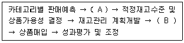
- A: 구색 계획의 개발, B: 상품의 점포별 할당
- A: 환경분석, B: 상품구매결정
- A: 머천다이징 수준결정, B: 상품구색 결정
- A: 재고계획, B: 상품의 점포별 할당
- A: 카테고리별 가격결정, B: 상품구색 결정
(정답률: 17%)
58. 고객관계관리 프로그램의 목적에 대한 설명으로 거리가 먼 것은?
- 기존 고객의 가치증대
- 신규고객확보
- 고객관리비용 감소
- 고객유지율 개선
- 단기적 관계유지
(정답률: 62%)
59. 다음에서 설명하는 유통조사방법은?
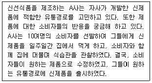
- 표적집단면접(Focus Group Interview)
- 갱서베이(Gang Survey)
- 민족지학적 연구(Ethnographic Research)
- 심층면접(Depth Interview)
- 뉴로마케팅(Neuromarketing)
(정답률: 38%)
60. 뉴 미디어와 그에 대한 설명으로 적절하게 연결된 것은?
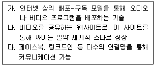
- 가-UCC, 나-SNS, 다-위키
- 가-팟캐스팅, 나-유튜브, 다-SNS
- 가-SNS, 나-블로그, 다-위키
- 가-SNS, 나-UCC, 다-블로그
- 가-웹커뮤니티, 나-유튜브, 다-SNS
(정답률: 57%)
61. 소매업의 수평적 경쟁 유형에 해당하는 것은?
- 전통시장과 인근 대형마트간 경쟁
- 제조업자와 공급자간 경쟁
- 제조업자와 도매상간 경쟁
- 전통시장과 공급자간 경쟁
- 제조업자와 소매상간 경쟁
(정답률: 60%)
62. 서비스 포지셔닝 방법에 대한 설명으로 옳지 않은 것은?
- “우리는 2위입니다”라는 포지셔닝은 등급별 포지셔닝에 해당된다.
- 헬스클럽 프랜차이즈가“여성 전용”이라고 한 것은 이용자 중심 포지셔닝이다.
- 특정 항공사가“저렴하면서 편리한 서비스”를 강조하는 것은 가치중심 포지셔닝이다.
- “24시간, 고객 대기시스템”을 강조하는 것은 응답성 중심 포지셔닝이다.
- “다양함을 즐길 수 있는 문화공간”임을 표방하는 것은 유형성 중심 포지셔닝이다.
(정답률: 43%)
63. EDLP(every day low price)와 high-low 가격정책에 대한 설명으로 옳지 않은 것은?
- high-low 가격정책은 보통 EDLP 정책보다 높은 가격정책을 추구한다.
- high-low 가격정책은 가격세일행사를 빈번하게 하기 때문에 수요의 변동이 크다.
- high-low 가격정책은 EDLP 정책보다 상품의 재고관리가 복잡하다.
- high-low 가격정책은 EDLP 정책보다 촉진비용이 덜 드는 경향이 있다.
- high-low 가격정책은 보통 EDLP보다 경쟁자와의 가격전쟁에 대한 압박이 높다.
(정답률: 55%)
64. 직원에 대한 인사고과의 과정에서 범하기 쉬운 오류에 대한 설명으로 옳지 않은 것은?
- 피고과자의 한 가지 면을 보고 다른 것까지 모두 일반화하는 오류를 범한다.
- 피고과자의 실제의 능력이나 실적보다 더 높게 평가하는 경향이 있다.
- 피고과자를 평가함에 있어 중간 정도의 점수를 부여하는 경향을 보인다.
- 쉽게 기억할 수 있는 최근의 실적이나 능력을 중심으로 평가하기 쉽다.
- 부하와 좋은 인간관계를 갖고 있다면 오히려 능력을 낮게 평가하는 경향이 있다.
(정답률: 59%)
65. 상표확장전략에 대한 설명으로 옳지 않은 것은?
- 기존의 제품범주 내에서 새로운 색상, 사이즈, 맛 등의 제품을 추가적으로 도입하는 전략이다.
- 소비자들이 기존의 상표명에 친숙하다면 신제품을 즉시 인지할 수 있다는 장점이 있다.
- 개별 브랜드의 신제품 도입보다 신제품에 대한 마케팅 비용이 절감된다.
- 신제품이 호의적인 평가를 받게 되면 기존의 상표명의 이미지를 강화시킬 수 있다.
- 지나친 상표확장은 원래의 상표명이 가졌던 강한 이미지를 약화시킬 우려가 있다.
(정답률: 35%)
66. 여러 성장전략 가운데서 혁신성이나 위험성이 가장 낮고 시간적으로도 가장 단기적인 성격의 성장전략이라고 볼 수 있는 것은?
- 제품개발(product development)
- 시장개척(market development)
- 전방통합(forward integration)
- 후방통합(backward integration)
- 시장침투(market penetration)
(정답률: 56%)
67. POP 광고와 관련된 설명으로 가장 옳지 않은 것은?
- 매장 내에서 고객의 관심을 끌 수 있는 정보 즉 상품명, 가격, 소재, 특징 등을 알려준다.
- 매스컴 광고를 그대로 POP 디스플레이에 이용하기도 한다.
- 소비자의 수준을 고려하여 충동구매촉진보다 이성적 설득방법을 사용하는 것이 효과적이다.
- 문장을 가로로 쓰고 적당한 여백을 두는 것이 유리하다.
- 기업을 PR하는 역할을 한다.
(정답률: 53%)
68. 다음은 어떠한 유통조사를 설명한 것인가?
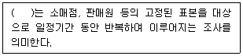
- 실험조사
- 소매조사
- 반복측정조사
- 패널조사
- 시간차조사
(정답률: 35%)
69. POS시스템의 상품코드로 활용되는 OCR 표찰의 특징으로 옳지 않은 것은?
- 가공식품 및 잡화 등에 적합하다.
- 상품속성에 대한 정보를 다량 기입할 수 있다.
- 백화점 및 전문점에 더 적합하다.
- 숫자 뿐만 아니라 문자를 직접 입력할 수 있다.
- 코드 통일화가 어려운 상품에 이용된다.
(정답률: 18%)
70. 특정 소매점에서 여러 판매촉진방법에 따른 매출성과와의 인과성을 규명하고자 하는 경우에 사용될 분석기법으로 적절한 것은?
- 분산분석
- 상관관계분석
- 군집분석
- 요인분석
- 컨조인트분석
(정답률: 18%)
4과목: 유통정보
71. 전자화폐의 특징을 설명한 것으로 가장 옳지 않은 것은?(문제 오류로 가답안 발표시 1번으로 발표되었지만 확정답안 발표시 모두 정답처리 되었습니다. 여기서는 가답안인 1번을 누르면 정답 처리 됩니다.)
- 시간적·공간적 비용을 줄임으로써 화폐공급량을 증가시킨다.
- 현금 사용 시 발생되는 운반·보관 비용과 도난위험 등을 방지할 수 있다.
- 통화 유통속도를 증가시킨다.
- 중앙은행의 발권비용을 감소시키고 정산의 효율성을 증가시킨다.
- 전자지갑을 통하여 지불서버에 한 번만 등록하면 해당 전자지불을 지원하는 모든 쇼핑몰에서 사용가능하기 때문에 지불 시 신용카드번호 같은 정보를 매번 입력하지 않아도 된다.
(정답률: 61%)
72. GS1 DataBar에 대한 설명으로 가장 옳지 않은 것은?
- 로트번호, 생산지 정보 활용을 통한 이력관리가 가능하다.
- 이전의 바코드보다 크기가 커서 더 많은 정보를 저장할 수 있다.
- 유통기한에 따른 상품관리가 가능하다.
- 보다 효과적인 ECR(Efficient Consumer Response)가 가능하다.
- 구(舊) RSS(Reduced Space Symbology)를 말한다.
(정답률: 32%)
73. 성공적인 웹사이트 구축을 위해 고려해야 할 요인으로 가장 거리가 먼 것은?
- 정보의 내용이 진위와 더불어 공신력이 있는 내용이어야 한다.
- 새로운 정보의 추가 및 갱신을 신속하게 수행하여야 한다.
- 첫 방문자도 찾고자 하는 목표를 쉽게 찾아 갈 수 있도록 하여야 한다.
- 판매된 제품을 바탕으로 응용할 수 있는 툴(tool)의 제공 등 콘텐츠 내용의 전문화가 필요하다.
- 넓은 구조보다는 깊은 구조를 갖도록 디자인하여야 한다.
(정답률: 55%)
74. Wiig의 지식경영모델에서 정의한, 지식의 유형에 대한 설명으로 가장 옳지 않게 짝지어진 것은?
- 사실지식 : 데이터 및 인간관계, 측정치, 즉 전형적으로 직접 관찰 가능하고 검증 가능한 콘텐츠 등을 의미한다.
- 개념지식 : 체계나 관점 등을 의미한다.
- 일반지식 : 일반적으로 명시적이라기 보다는 암묵적인 형태를 가지는 것으로 일상생활에서 무의식적으로 사용되는 지식을 의미한다.
- 기대지식 : 아는 자의 판단, 가정 등을 의미하는 것으로, 의사결정에 이용되는 직관, 예감, 선호도, 경험적 판단 등을 들 수 있다.
- 방법지식 : 추론, 전략, 의사결정 등에 관한 방법을 의미한다.
(정답률: 41%)
75. 온라인 유통채널을 운영하는 오프라인 유통기업의 사업모델은 무엇인가?
- Click-and-Mortar
- Virtual-and-Mortar
- Brick-and-Mortar
- Click-and-Virtual
- Brick-and-Virtual
(정답률: 31%)
76. 전자서명이 유효하기 위한 조건으로 가장 옳지 않은 것은?
- 모든 서명자가 전자서명을 생성할 수 있어야 한다.
- 전자서명의 서명자를 불특정 다수가 검증 가능하여야 한다.
- 서명자는 서명행위 이후에 서명한 사실을 부인할 수 없어야 한다.
- 서명한 문서의 내용을 변경할 수 없어야 한다.
- 전자문서의 서명을 다른 전자문서의 서명으로 사용할 수 없어야 한다.
(정답률: 49%)
77. 국제표준상품식별코드는?
- UNSPSC
- GTIN
- GDTI
- GINC
- EPC
(정답률: 49%)
78. 유비쿼터스 컴퓨팅(Ubiquitous Computing)에 대한 설명으로 가장 거리가 먼 것은?
- 유비쿼터스 컴퓨팅은 모든 사물에 칩을 넣어 어느 곳에서든 사용할 수 있도록 구현한 컴퓨팅 환경을 지칭한다.
- 유비쿼터스 컴퓨팅의 센싱기술은 주변의 기계가 커뮤니케이션을 할 수 있도록 자율적으로 정보의 수집 및 관리가 가능하게 지원하는 기술이다.
- '네트워크에 연결되지 않은 컴퓨터는 유비쿼터스 컴퓨팅이 아니다'라고 할 만큼 항상 네트워크에 접근 가능해야 하는 컴퓨팅 환경이다.
- 가상공간이 아닌 현실 세계의 어디서나 컴퓨터의 사용이 가능하도록 구현된 컴퓨팅 환경이다.
- 사용자가 네트워크나 컴퓨터를 의식한 상태에서 의도적인 조작을 통해 네트워크에 접속할 수 있는 정보통신 환경을 말한다.
(정답률: 42%)
79. 다양한 품목을 취급하는 중소업체들의 거래를 중개하는 G마켓 같은 전자시장(e-marketplace)형태를 무엇이라 하는가?
- 판매자 중심 전자시장
- 구매자 중심 전자시장
- 수직적 전자시장
- 수평적 전자시장
- 협업지원 전자시장
(정답률: 43%)
80. EPCglobal Network의 주요 구성요소에 대한 설명으로 가장 옳지 않은 것은?
- EPC(Electronic Product Code)는 RFID를 이용한 객체식별과 EPCglobal N/W을 통한 객체정보 접근 및 교환을 위한 Key이다.
- ONS(Object Naming Service)는 특정 EPC에 대한 질의에 대하여 객체 정보 획득이 가능한 URI값을 반환함으로써 글로벌 검색서비스를 가능케 하는 구성요소이다.
- ALE(Application Level Event)는 리더가 읽어들인 RFID 태그 정보를 어플리케이션 계층으로 전달하는 역할을 하는 일종의 미들웨어이다.
- EPCIS(EPC Information Service)는 객체에 대한 정보접근과 교환을 위한 표준 인터페이스로서, 객체 이벤트를 저장하여 객체정보를 여러 어플리케이션에서 사용할 수 있도록 해주는 EPCglobal N/W의 가장 중요한 구성요소이다.
- DS(Discovery Service)는 미들웨어로부터 전달받은 이벤트 정보를 이용하여 객체의 상태정보, 추적정보를 생성하여 로컬저장소에 저장·관리하고, 주어진 EPC에 대한 정보 취합의 허브 역할을 한다.
(정답률: 22%)
81. KAN상품분류코드에 대한 설명으로 가장 적합하지 않은 것은?
- GS1한국위원회(http://www.gs1kr.org)에 등록된 방대한 상품정보를 효율적으로 검색 및 분석할 수 있는 상품분류코드체계이다.
- 업체에 따라 서로 상이한 상품분류체계를 표준화하기 위한 목적을 갖고 있다.
- 개별상품에 대한 분류기준을 제시하여 상품정보를 효율적으로 검색할 수 있는 키(key)의 역할도 한다.
- POS데이터서비스 분류단위의 기준으로 활용된다.
- KAN상품분류코드의 구조는 대분류, 중분류, 소분류, 세분류로 되어 있다.
(정답률: 19%)
82. 전자무역의 장점으로 가장 거리가 먼 것은?
- 무역거래 시간 및 비용의 절감
- 글로벌 마케팅 활동의 가능
- 거래처 발굴의 효율화
- 신용장 활용의 확대
- 중소기업의 성장 가능성 증대
(정답률: 45%)
83. EDI기술을 토대로 소매업체와 공급업체를 연결해 생산계획과 수요예측, 재고관리 등 협업을 가능케 해주는 시스템을 무엇이라 하는가?
- CM
- VMI
- CMI
- CPFR
- CRP
(정답률: 27%)
84. 정보는 특별한 관련성과 목적을 가진 데이터이다. 다음 중 데이터를 정보로 전환하는 데 필요한 다섯 유형의 중요한 활동으로 가장 적합하지 않은 것은?
- 맥락화
- 분류
- 정정
- 대화
- 축약
(정답률: 53%)
85. 기업이 보유하고 있는 지적자산은 형식지와 암묵지로 구분해 볼 수 있다. 다음 설명 중 가장 적절치 못한 것은?
- 형식지란 문서화되어 있고, 보존이 가능하고, 성문화 할 수 있는 것들을 말한다.
- 특허권, 상표, 사업계획, 시장조사, 고객목록 등이 형식지에 해당된다.
- 도제 장인의 솜씨는 암묵지에 해당한다.
- 사람들 머릿속에 있는 지식을 인식하고, 생성하고, 공유하고, 관리하는데 있어 암묵지에서 암묵지로 이동을 할 수 있도록 구현된 시스템을 지식경영시스템(KMS)이라 한다.
- 제품별 운송시 주의사항과 지침은 형식지에 속한다.
(정답률: 64%)
86. 소비자가 개인 또는 단체를 구성하여 상품의 공급자나 생산자에게 가격, 수량, 부대 서비스 조건을 제시하고 구매하는 역경매 형태의 전자상거래는 무엇인가?
- B2B
- P2P
- B2C
- C2C
- C2B
(정답률: 58%)
87. 물류정보화의 핵심 기술과 그 설명으로 옳지 않은 것은?(문제 오류로 가답안 발표시 1번으로 발표되었지만 확정답안 발표시 1, 3번이 정답처리 되었습니다. 여기서는 가답안인 1번을 누르시면 정답 처리 됩니다.)
- LAN(Local Area Network) : 하나의 빌딩, 학교 또는 가정과 같이 근거리에 있는 일군의 컴퓨터들을 연결하기 위해서 설계된 네트워크로 가장 큰 규모의 네트워크 단위이다.
- 위치기반서비스(LBS) : 이동하는 사용자들이 개인에 맞춘 지역 콘텐츠에 바로 접속하게 하도록 지원하여 화물추적서비스나 차량위치추적 서비스 등을 가능하게 해 준다.
- 와이파이(Wi Fi) : 전파를 통해 이동 가능한 장치들이 무선으로 근거리 네트워크에 접속하는 방법으로 최대 300m정도 범위까지 서비스가 가능하다.
- 지리정보시스템(GIS) : 다차원 지도상에 표시할 정보를 제공해주는 하드웨어, 소프트웨어, 데이터로 구성된 정보기술이다. 기업에서는 데이터베이스와 GPS가 결합된 서비스를 활용하기도 한다.
- RFID : 전자 태그나 라벨을 이용하여 물체를 무선으로 가까운 거리 내에서 식별하는 기술로 가축에서부터 컨테이너 화물에 이르기까지 다양한 자산들을 추적할 수 있도록 지원한다.
(정답률: 60%)
88. 데이터를 수집하여 지식으로 활용하는 기술에 대한 설명으로 가장 거리가 먼 것은?
- OLAP는 기술을 이용하여 거래 정보와 이벤트 정보를 수납하고 사전에 정의된 비즈니스 규칙에 따라 정보를 처리하고, 저장하고, 새로운 정보로 갱신한다.
- 데이터 마트는 데이터의 한 부분으로서 특정 사용자가 관심을 갖는 데이터들을 담은 비교적 작은 규모의 데이터 웨어하우스를 지칭한다.
- 데이터 웨어하우스와 데이터 마트의 구분은 사용자의 기능 및 제공 범위를 기준으로 한다.
- 데이터마이닝은 원래의 자료 그 자체만으로는 제공되지 않은 정보를 추출하기 위해 자료를 분석하는 과정이다. 업무를 하나의 관점에서 축약하여 경향을 파악하고 더 나은 예측을 위해 활용한다.
- 빅데이터는 기존의 정형화된 데이터 뿐만 아니라, 비정형적 데이터까지 포함한 방대한 양의 데이터를 수집하여 다양한 관점에서 신속하게 패턴이나 예측 정보를 제공한다.
(정답률: 25%)
89. ( )안에 들어갈 알맞은 말은?
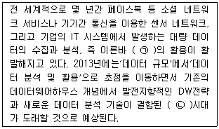
- ㉠ 소셜네트워크서비스, ㉡ 빅데이터
- ㉠ 온라인거래처리(OLTP), ㉡ 온라인분석처리(OLAP)
- ㉠ 빅데이터, ㉡ 빅데이터
- ㉠ 만물인터넷, ㉡ 만물인터넷
- ㉠ 사물인터넷, ㉡ 만물인터넷
(정답률: 46%)
90. 다음은 기업에서 일어날 수 있는 의사결정의 예이다. 기업을 운영, 관리, 전략계층으로 구분해 볼 때, 다음의 의사결정 사례는 각기 어느 계층에서 일어날 수 있는지 가장 적절하게 짝지어진 것은?
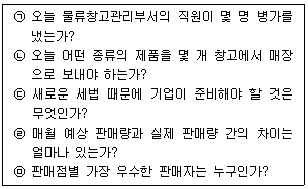
- ㉠-운영, ㉡-관리, ㉢-전략, ㉣-관리, ㉤-운영
- ㉠-운영, ㉡-운영, ㉢-전략, ㉣-전략, ㉤-관리
- ㉠-운영, ㉡-운영, ㉢-관리, ㉣-관리, ㉤-운영
- ㉠-운영, ㉡-운영, ㉢-전략, ㉣-관리, ㉤-관리
- ㉠-운영, ㉡-관리, ㉢-관리, ㉣-관리, ㉤-운영
(정답률: 38%)
EOQ = √(2DS/H)
여기서,
D = 수요량 (Demand)
S = 주문 비용 (Ordering cost)
H = 보유 비용 (Holding cost)
주어진 자료에서,
D = 10,000 (년간 수요량)
S = 100 (주문 비용)
H = 20 (보유 비용)
따라서, EOQ = √(2DS/H) = √(2 x 10,000 x 100 / 20) = √(1,000,000) = 1,000
하지만 보기에서 주어진 값 중 EOQ는 100이므로, 이는 계산 결과와 다르다. 따라서, 보기에서 주어진 값은 EOQ가 아니며, 정확한 이유는 주어지지 않았다.